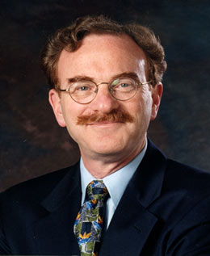

News Archives : 2007 : Randy Schekman Presents 2007 Bloch Lecture
by Kristen Uekermann
May 15, 2007
|  Randy Schekman |
Research in Schekman’s lab is devoted to a molecular description of the process of membrane assembly and vesicular traffic in eukaryotic cells. Basic principles that emerged from these studies in yeast are now being applied to studies of genetic diseases of protein transport. A combination of genetic and cytological evaluation of the secretion (sec) mutants has allowed a description of the secretory pathway in Saccharomyces cerevisiae. Protein transport in yeast appears to be mediated by the same organelles and proteins that operate in mammalian cells. Molecular cloning analysis of SEC genes revealed striking structural and functional homology with corresponding mammalian genes.
"Transport vesicle biogenesis: Mechanism and disease connections", Schekman’s talk, will take place on Thursday, May 31, 2007, at 12:00 PM in the Sherman Fairchild Lecture Hall.
Schekman received his Ph. D. in Biochemistry at Stanford University. His post-doctoral work was done at the University of Cailfornia, San Diego. His honors include: the Eli Lilly Award in microbiology, the Lewis S. Rosenstiel Award in basic biomedical science, the Gairdner International Award, the Amgen Award from the Protein Society, the Albert Lasker Award for Basic Medical Research, and the Louisa Gross Horwitz Prize of Columbia University. Dr. Schekman is a member of the National Academy of Sciences and the American Academy of Arts and Sciences. He is scientific director of the Jane Coffin Childs Memorial Fund for Medical Research, past president of the American Society for Cell Biology, and editor-in-chief of Proceedings of the National Academy of Sciences.
The Bloch lecture, sponsored by Pfizer, honors Harvard faculty member and Nobel-prize recipient Konrad Bloch (1912-2000), a pioneer in the field of cholesterol and lipid metabolism.